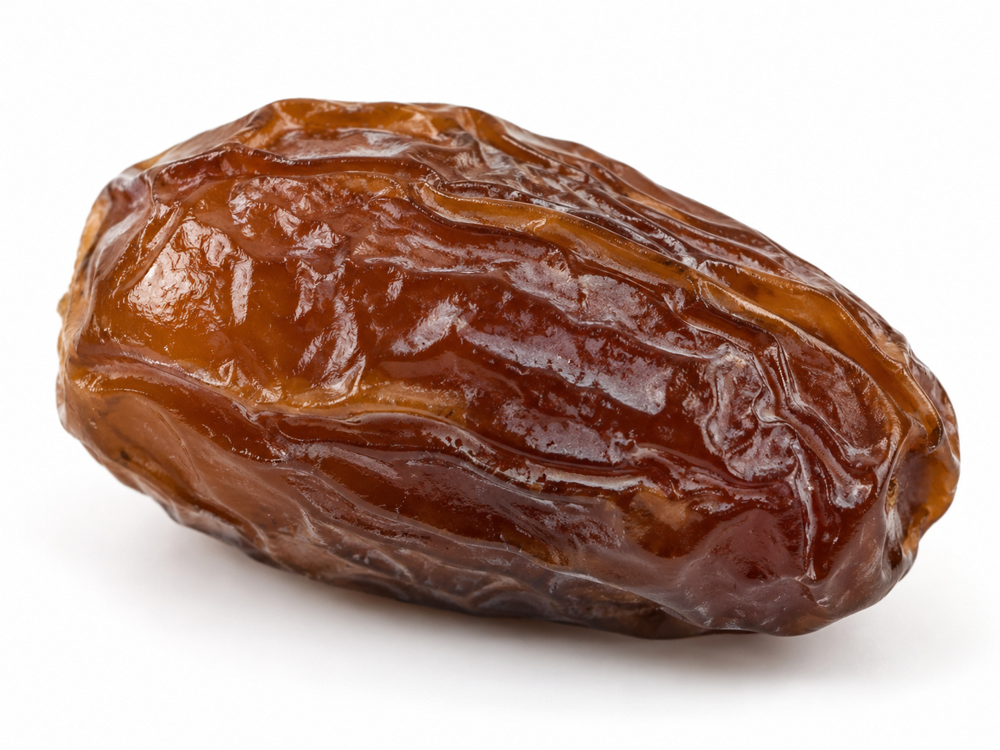

🔎 ركن أكتشف ما حولي
سبحان مَن أنبتها
وحدة أنا مخلوق · اليوم الثامن — بطاقاتُ أجزاء النبات للملاحظة بالمكبّر والمطابقة
طريقة العمل: يلاحظ الطفل عيّناتِ النبات بالمكبّر (بذرة · ورقة · جذر · ثمرة)، ثم يطابقُ كلَّ عيّنةٍ ببطاقتها. وعند كلِّ عجيبةٍ يردّد: «سبحان مَن أنبتها».
بطاقاتُ عيّنات النبات — تُقصّ وتُطابَق بالعيّنة الحقيقية
 صورة: بذرة
صورة: بذرةبذرة
سبحان مَن أنبتها
 صورة: ورقة
صورة: ورقةورقة
سبحان مَن أنبتها
جذر
سبحان مَن أنبتها
وعيّناتٌ أخرى

صورة: ثمرةثمرة
رزقٌ من الله
 صورة: شجرة
صورة: شجرةشجرة
سبحان مَن أنبتها
 صورة: مكبّر
صورة: مكبّرمكبّري
أُلاحظُ وأتفكّر
دليل معلمة غرس القيم · اليوم الثامن — ركن أكتشف ما حولي